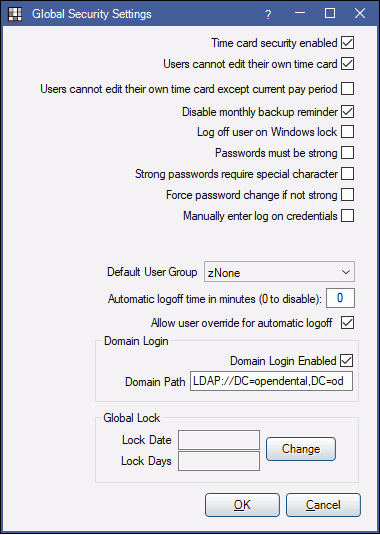

Global Security Settings
Set security settings to affect all users in Global Security Settings.
In the Security window, at the upper left, click Global Security Settings.
Time Card Security Enabled:
- Checked: Enables the Users cannot edit their own time card and Users cannot edit their own time card except current pay period boxes (see below). Limits users without the Edit All Time Cards permission from viewing other employee timecards.
- Unchecked: Disables the Users cannot edit their own time card and Users cannot edit their own time card except current pay period boxes.
Users cannot edit their own time card: This option can only be changed if the Time Card Security Enabled box is also checked. The setting of this box will override the Edit All Time Cards security permission.
- Checked: Individual users cannot make changes to their time card. Cannot be checked if Users cannot edit their own time card except current pay period is checked.
- Unchecked: Individual users can make changes to their time card. Since error fixing is tracked well in time cards, most offices keep this box unchecked because it is useful when employees can make notes and fix errors.
Users cannot edit their own time card except current pay period: This option can only be changed if the Time Card Security Enabled box is also checked.
- Checked: Allow users to edit time cards during the current pay period. Cannot be checked if Users cannot edit their own time card is checked.
- Unchecked: Do not allow users to edit their own time card during the current pay period.
Disable Monthly Backup Reminder:
- Checked: The monthly Backup Reminder will no longer show. Do not disable unless the practice has an established backup and recovery process (for HIPAA compliance). A password is required to change this option. It is abracadabra.
- Unchecked: The next backup reminder will show one month after the date it is deselected.
Log off user on Windows lock:
- Checked: Automatically logs the current user out of Open Dental whenever they lock Windows.
- Unchecked: Do not automatically log off the user when Windows is locked.
Passwords must be strong:
- Checked: All passwords must be at least 8 characters and contain at least one number, one uppercase letter, and one lowercase letter. Note:
- If using ODMobile and Passwords must be strong is enabled, users who do not have a strong password must change passwords to meet the criteria before they can access the ODMobile app. Users who already have a strong password do not need to go through this process.
- When passwords must be strong, a password is required when adding a new user.
- Unchecked: Strong passwords are not required.
Strong passwords require special character:
- Checked: When passwords must be strong is enabled, the password must also contain at least one special character (e.g., #, $, !).
- Unchecked: A special character is not required.
Force password change if not strong:
- Checked: When passwords must be strong is enabled, users who do not have a strong password will be required to change their password the next time they log on so it meets criteria.
- Unchecked: Users will not be required or prompted to change to a strong password.
Manually enter log on credentials:
- Checked: Requires users to manually type their user name when logging in.
- Unchecked: Users will select their user name from a list.
Maintain selected patient when changing users: Only visible when Clinics is enabled.
- Checked: When a user Logs Off, the previously selected patient, as well as the 5 previous patients in the dropdown menu, will remain selected for the next user who logs on.
- If the previously selected patient is not assigned to a clinic, the patient will not be maintained.
- If the next user to log on does not have access to the clinics associated with the previously selected patients, those patients will not show in the list.
- Unchecked: Do not maintain previously selected patients when a user logs off.
Default User Group: Select the default user group to apply to new users added via the Main Menu, Setup, Security, Add User. Groups that have the Security Admin permission enabled cannot be used as a Default User Group. See User Edit.
Automatic logoff time in minutes (0 to disable): Set a time when, after a period of inactivity, Open Dental will automatically log off the current user. Enter 0 to prevent automatic log off. If automatic log off is turned on, and a user manually clicks Log Off, any unsaved changes will be lost, and no warning message will show.
Allow user override for automatic logoff: Determines whether users are allowed to have a specific logoff time entered.
- Checked: Allow a user specific override for automatic logoff times. See User Edit to enter a time.
- Unchecked: Do not allow user specific overrides for automatic logoff times.
Domain Login: See Single Sign-On / Domain Login.
Global Lock: See Security Lock Dates.